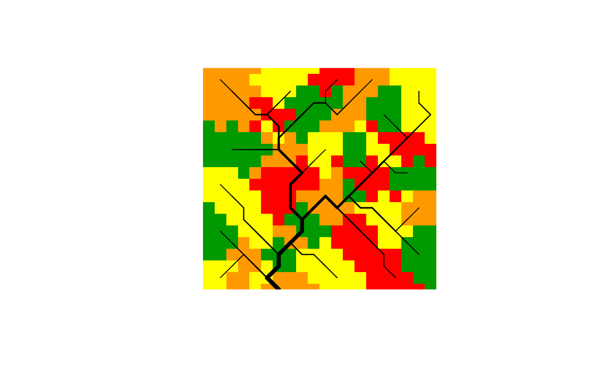
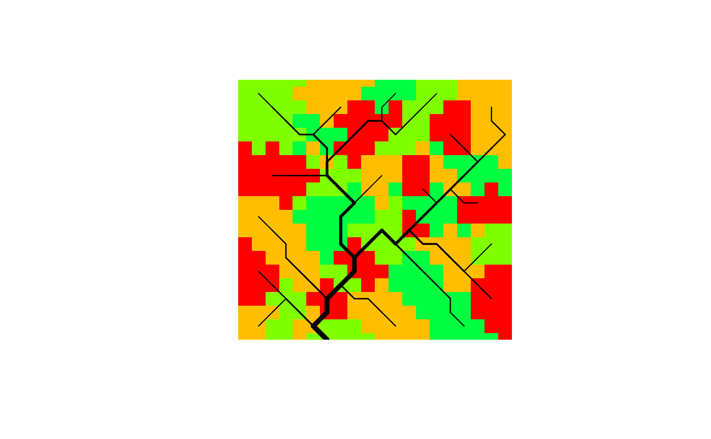
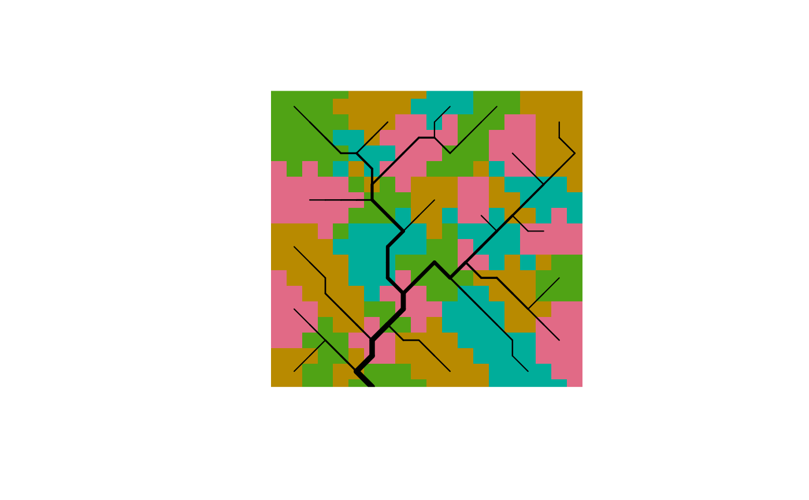
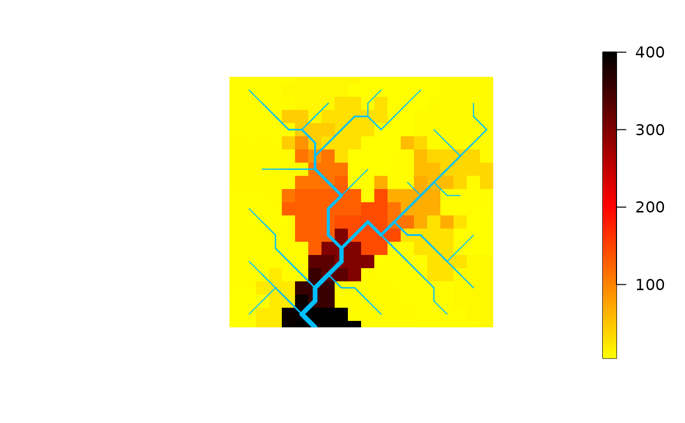

Draw subcatchment map from an Optimal Channel Network
draw_subcatchments_OCN.RdFunction that draws a map of subcatchments generated by the aggregation process on the OCN. If theme is NULL, colormap is such that neighbouring subcatchments have distinguished colors. If theme is specified, colors reflect the values of theme across subcatchments, in analogy with draw_thematic_OCN.
Usage
draw_subcatchments_OCN(OCN, theme = NULL, drawRiver = TRUE,
colPalette = NULL, colLevels = NULL, riverColor = NULL, addLegend = NULL,
min_lwd = 0.5, max_lwd = 5, add = FALSE, args_imagePlot = list(), ...)Arguments
- OCN
A
riverobject as produced byaggregate_OCN.- theme
Vector (of length
OCN$SC$Nnodesexpressing the spatial field of interest.- drawRiver
Logical. If
TRUE, draw the OCN on top of the subcatchment map.- colPalette
Color palette used.
colPaletteaccepts both functions creating color palettes and vectors of colors. In the latter case,length(colPalette)must be greater than the number of color levels. Iftheme = NULL, default isc("#009900", "#FFFF00", "#FF9900", "#FF0000", "#FF00FF", "#9900CC", "#555555", "#BBBBBB"). Only the firstncolors are used, wherenis the number of different colors needed (calculated via a greedy coloring algorithm).colPaletteaccepts both functions creating color palettes and vectors of colors (see examples); in the latter case, the length of the vector cannot be lower thann(ncannot be predicted a priori, but generally 6 colors should suffice). Iftheme != NULL, default iscolorRampPalette(c("yellow","red","black")).- colLevels
Number of colors in the palette (only effective if
themeis not null).colLevelsmust be a vector of the formc(minval, maxval)orc(minval, maxval, N_levels). The vector of breakpoints used to attributethemevalues to a given color is then defined asseq(minval, maxval, N_levels). Default isminval = min(theme[!(is.nan(theme))]),maxval = max(theme[!(is.nan(theme))]),N_levels = 1000.- riverColor
Color used to display the OCN (only effective if
drawRiver = TRUE).- addLegend
Logical. State if a legend should be displayed (only active if
themeis not null.- min_lwd, max_lwd
Minimum and maximum values of line width used to display the OCN (actual line width is proportional to the square root of drainage area).
- add
Logical. If
TRUE, add to an already existing plot. Taken asFALSE(with a warning if a different value is supplied) if no graphics device is open.- args_imagePlot
Only effective if
addLegend = TRUE. List of arguments passed toimagePlotfor drawing a continuous legend. For example, argumentsmallplotcan be used to specify the plot coordinates for the legend.- ...
Further arguments to be passed to
image. Default plot options are as indraw_thematic_OCN.
Examples
# 1a) aggregate a 20x20 OCN , use thrA = 5 pixels
# and draw subcatchments with default color palette
OCN <- aggregate_OCN(landscape_OCN(OCN_20), thrA = 5)
draw_subcatchments_OCN(OCN, drawRiver = TRUE)

# 1b) same as above, but define color palette with a function
draw_subcatchments_OCN(OCN, drawRiver = TRUE, colPalette = rainbow)

# 1c) same as above, but define color palette with a vector of colors
draw_subcatchments_OCN(OCN, drawRiver = TRUE, colPalette = hcl.colors(6, "Dark 3"))

# 2) Display theme at subcatchment level
draw_subcatchments_OCN(OCN, theme = OCN$AG$A)
